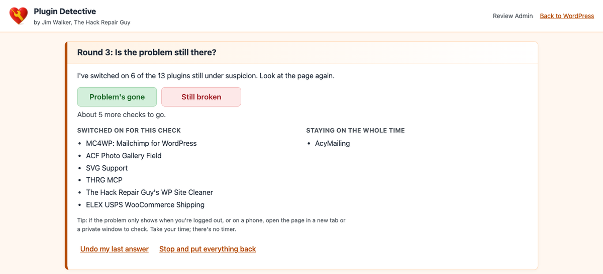
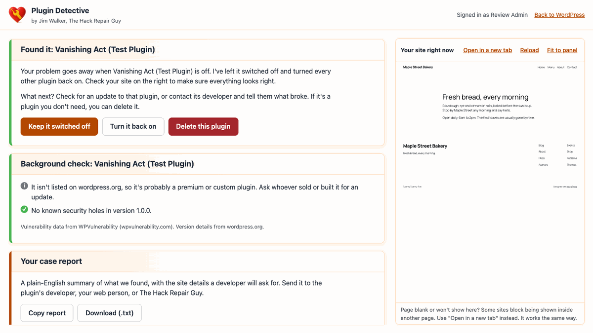

Find the plugin that broke your site.
In a few quick checks, even when wp-admin is down.
THRG Plugin Detective In Action (1:45) · Watch on YouTube
Goodbye, whack-a-mole
Something stopped working after an update or a new plugin. The usual advice is to switch every plugin off, then turn them back on one at a time, checking the site after each one. It works. It also takes forever.
Plugin Detective does it in halves. You show it where the problem is, it switches some plugins off, and you tell it whether the problem is still there. A site with 40 plugins usually takes six or seven checks. When you're done, every plugin goes back the way it was, unless you decide to keep the problem plugin switched off or delete it.
How it works
- Show it the problem. Click "Troubleshoot" in the admin bar on the broken page, or start from Tools > Plugin Detective.
- Mark what must stay on. Tick only the plugins your site can't run without, like WooCommerce or your page builder. Ticked plugins stay on the whole time, which also means they can't be checked.
- Answer "Problem's gone" or "Still broken." It switches plugins off in halves and narrows the suspects each round.
- Found it. The problem plugin stays off, everything else comes back on, and you check your site on the right before deciding: keep it off, turn it back on, or delete it.
| Active plugins | Usually | At most |
|---|---|---|
| 10 | 4–5 checks | 6 |
| 20 | 5–6 checks | 7 |
| 40 | 6–7 checks | 8 |
| 64 | 7–8 checks | 8 |


More than just "this one"
A background check
Once it finds the plugin, it looks it up: is there a newer version, has wordpress.org closed it, has it gone two years without an update, and does your version carry known security holes? You see how many, how serious, and whether updating fixes them.
A report you can send
A plain-English summary of the session, the background check and your site details. Copy it or download it and send it to the plugin's developer, your web person, or The Hack Repair Guy.
Full-screen workspace
What to do next sits on the left two-thirds, your live site on the right third, so you can see the site while you answer.
Delete it if you don't need it
One button, after it asks first. It removes the problem plugin's files and turns everything else back on. Its saved settings stay in your database.
Works when your site doesn't
Emergency recovery link
The troubleshooter runs without loading any plugins or your theme. White screen, "critical error," or a locked-out wp-admin: it still opens. You'll find the address under Tools > Plugin Detective. Bookmark it.
Stuck in maintenance mode?
If an interrupted update left visitors on "Briefly unavailable for scheduled maintenance," the troubleshooter can remove the leftover file for you, after asking first.
Undo my last answer
Clicked the wrong button? Undo it and carry on.
Built with security in mind
Real logins, real 2FA
Already logged in to wp-admin? No second login. Otherwise it uses WordPress's normal password check and enforces two-factor codes for HackGuard Security and the Two Factor plugin.
Locked down
Every change needs an administrator who can manage plugins plus a per-session token. An address is locked out for 15 minutes after 5 failed tries.
Almost nothing leaves your server
No outside fonts, scripts or tracking. The only outside requests are the periodic check for a newer release on GitHub and, after it finds a problem plugin, the background check, which sends only that plugin's folder name. You can turn the background check off.
A safety net
While a session is open, wp-admin shows how many plugins are off with a one-click "Put my plugins back."
One thing to know: while you test, unticked plugins, including security and spam protection, are off for everyone visiting your site until you finish or stop. Keep sessions short.
Install
- Download
hackrepair-plugin-detective.X.Y.Z.zipfrom the latest release. - In WordPress, go to Plugins > Add New > Upload Plugin, upload the ZIP, and activate it.
- Go to Tools > Plugin Detective and bookmark the emergency address.
If your site is already down, upload the hackrepair-plugin-detective folder with your host's file manager or FTP. You don't need to activate it. Go straight to /wp-content/plugins/hackrepair-plugin-detective/troubleshoot/ on your site and sign in.
Requires WordPress 6.9.4+ and PHP 7.4+. Tested up to WordPress 7.1.3. Not for multisite yet.
Questions
Is it safe to switch my plugins off?
Plugin Detective only changes which plugins are switched on. It doesn't run their deactivation routines, so their settings and data aren't touched.
"It's not one of your plugins."
The problem was still there with the plugins off. Look at your theme, caching, must-use plugins, or something on the site that shouldn't be there. A hacked site can look a lot like a plugin conflict.
How can I try it out safely?
Download the free test plugin, Vanishing Act (Test Plugin), and install it. Switch it on and your home page shows "Page not found." Then run Plugin Detective and watch it track the culprit down. Delete it when you're done, and don't leave it on a live site.
Where does the security information come from?
From WPVulnerability, a free public database that pulls together reports from CVE, Wordfence, Patchstack, WPScan and others. Plugin Detective only shows the ones that affect your version.
Do updates work?
Yes. It checks its own GitHub releases and offers one-click updates on the Plugins screen.
Still stuck? A hacked site can look a lot like a plugin conflict. The Hack Repair Guy can help.
hackrepair.com